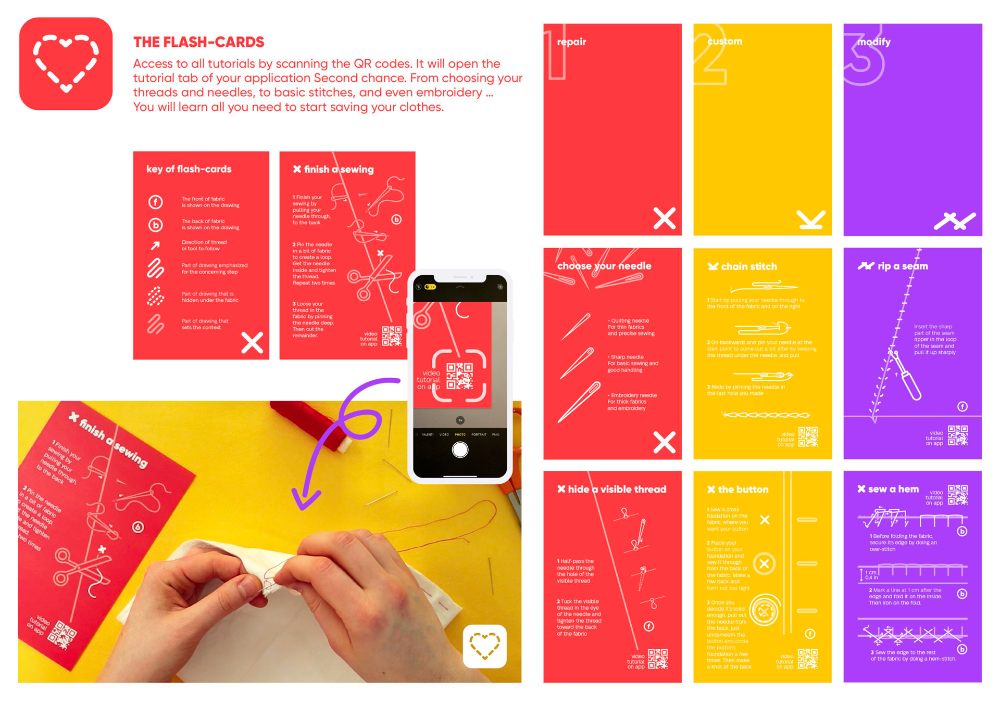
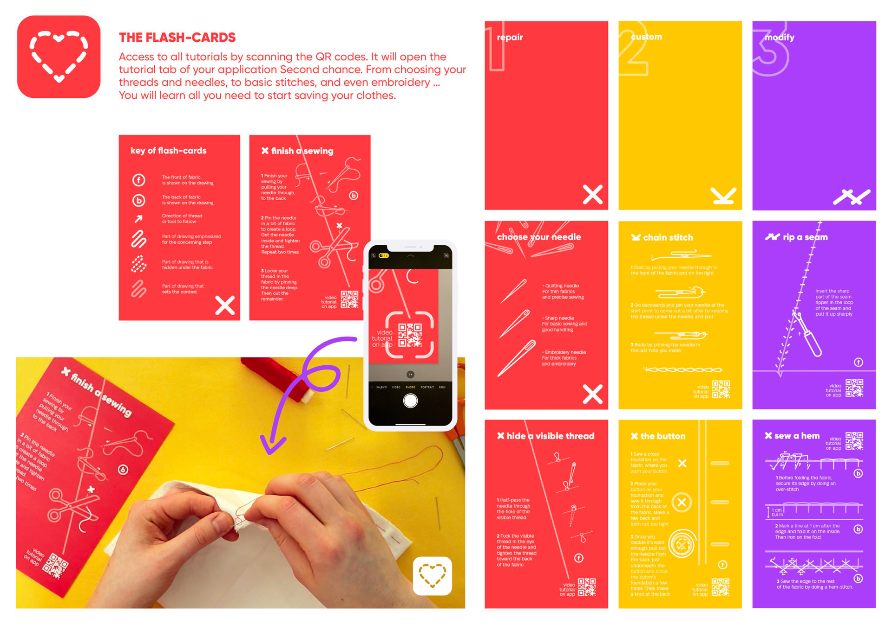

Morgan Gomez
Second Chance
Cumulus Green 2020 Honorable mention
Motion design, packaging, print, UI design
The fast-fashion industry ranks itself as the second most polluting industry in the world. It encourages overproduction, which has a detrimental impact on raw materials, climate change and biodiversity.
Our research has led us to understand that if we simply wear our clothes a bit longer, we could reduce our waste and slow down our consumption. So why don't we fall in love again with our old clothes?
To do so, we offer you the tools to repair and customize your clothes easily. And because changing the world is always better with friends, we created a Second chance app where you can be inspired and inspire a whole community of sewers, called the needle-mates. More than a sewing kit & an app that brings us together, Second chance is a new hope, a new opportunity offered to fix the mistakes of the past.


 
